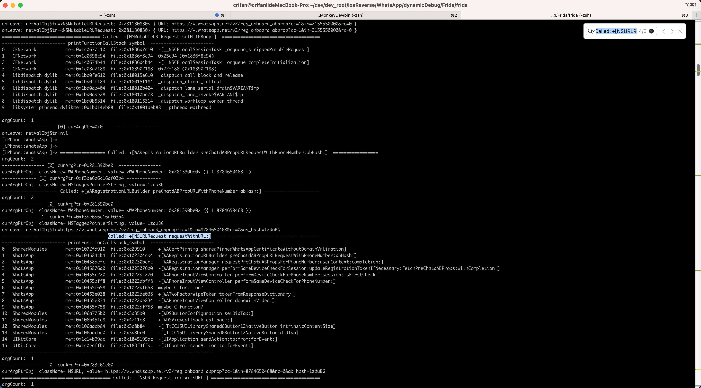
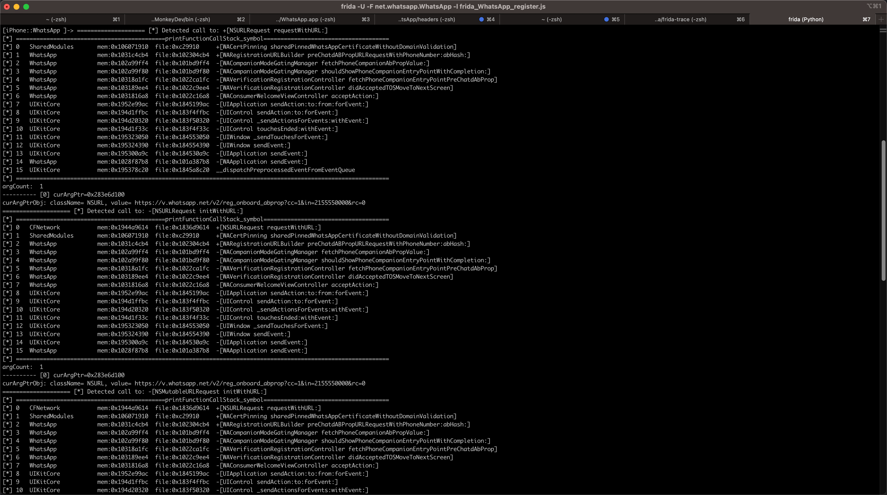

iOS函数调用堆栈
对于Frida中，打印iOS函数调用堆栈，此处整理出2个函数：
- 地址版本 = 精简版：
printFunctionCallStack_addr- 解释：（尤其是对于自己的二进制）只能输出地址，无法输出完整精确的符号名
- 优点：代码简洁
- 缺点：只有地址，没有符号，不够用
- 解释：（尤其是对于自己的二进制）只能输出地址，无法输出完整精确的符号名
- 符号版本 = 详细版：
printFunctionCallStack_symbol- 解释：从地址解析后得到准确的符号=函数名的版本
- 优点：能看到函数名=解析后的符号名，更好用
- 缺点：代码比较多比较复杂
- 说明
- 参考自
- 且做了额外优化
- 加上cache缓存，提高解析速度
- 解释：从地址解析后得到准确的符号=函数名的版本
printFunctionCallStack_addr
function printFunctionCallStack_addr(curContext){
console.log('Stack:\n' +
Thread.backtrace(curContext, Backtracer.ACCURATE)
.map(DebugSymbol.fromAddress).join('\n') + '\n');
}
用法举例：
Interceptor.attach(curMethod.implementation, {
onEnter: function(args) {
printFunctionCallStack_addr(this.context)
输出：
Stack:
0x109afd910 SharedModules!WAGetWCIHttpImpl
0x106a14cb4 !0x2304cb4 (0x102304cb4)
0x1062e9ff4 !0x1bd9ff4 (0x101bd9ff4)
0x1062e9f80 !0x1bd9f80 (0x101bd9f80)
0x1069da1fc !0x22ca1fc (0x1022ca1fc)
0x1069d9ee4 !0x22c9ee4 (0x1022c9ee4)
0x1069d16a8 !0x22c16a8 (0x1022c16a8)
0x1952e99ac UIKitCore!-[UIApplication sendAction:to:from:forEvent:]
0x194d1ffbc UIKitCore!-[UIControl sendAction:to:forEvent:]
0x194d20320 UIKitCore!-[UIControl _sendActionsForEvents:withEvent:]
0x194d1f33c UIKitCore!-[UIControl touchesEnded:withEvent:]
0x195323050 UIKitCore!-[UIWindow _sendTouchesForEvent:]
0x195324390 UIKitCore!-[UIWindow sendEvent:]
0x195300a9c UIKitCore!-[UIApplication sendEvent:]
0x1061487b8 !0x1a387b8 (0x101a387b8)
0x195378c20 UIKitCore!__dispatchPreprocessedEventFromEventQueue
printFunctionCallStack_symbol
代码：
/*******************************************************************************
* Config && Settings
*******************************************************************************/
// Print Function Stack Call
let isUseCache = true
// print only once stack for every function
let isPrintOnlyOnceStack = true
let cfgPrintOnceStackExceptionList = [
"+[NSURLRequest requestWithURL:]",
]
/*******************************************************************************
* Global Variables
*******************************************************************************/
var gPrintedStackDict = {}
var gAddrToModuleInfoDict = {}
var gModulePathToSlideDict = {}
var gModulePathToClassesDict = {}
var gModulePathAddrToSymbolDict = {}
var gClassnameToAllMethodsDict = {}
var free = null
var objc_getClass = null
var class_copyMethodList = null
var objc_getMetaClass = null
var method_getName = null
var dladdr = null
var _dyld_image_count = null
var _dyld_get_image_name = null
var _dyld_get_image_vmaddr_slide = null
var objc_copyClassNamesForImage = null
/******************** iOS Common Lib Functions ********************/
function initCommonLibFunctions(){
console.log("Init common functions in common libs:")
// free
free = new NativeFunction(
Module.findExportByName(null, 'free'),
'void',
['pointer']
)
console.log("free=" + free)
objc_getClass = new NativeFunction(
Module.findExportByName(null, 'objc_getClass'),
'pointer',
['pointer']
)
console.log("objc_getClass=" + objc_getClass)
class_copyMethodList = new NativeFunction(
Module.findExportByName(null, 'class_copyMethodList'),
'pointer',
['pointer', 'pointer']
)
console.log("class_copyMethodList=" + class_copyMethodList)
objc_getMetaClass = new NativeFunction(
Module.findExportByName(null, 'objc_getMetaClass'),
'pointer',
['pointer']
)
console.log("objc_getMetaClass=" + objc_getMetaClass)
method_getName = new NativeFunction(
Module.findExportByName(null, 'method_getName'),
'pointer',
['pointer']
)
console.log("method_getName=" + method_getName)
/*
int dladdr(const void *, Dl_info *);
typedef struct dl_info {
const char *dli_fname; // Pathname of shared object
void *dli_fbase; // Base address of shared object
const char *dli_sname; // Name of nearest symbol
void *dli_saddr; // Address of nearest symbol
} Dl_info;
*/
dladdr = new NativeFunction(
Module.findExportByName(null, 'dladdr'),
'int',
['pointer','pointer']
)
console.log("dladdr=" + dladdr)
// uint32_t _dyld_image_count(void)
_dyld_image_count = new NativeFunction(
Module.findExportByName(null, '_dyld_image_count'),
'uint32',
[]
)
console.log("_dyld_image_count=" + _dyld_image_count)
// const char* _dyld_get_image_name(uint32_t image_index)
_dyld_get_image_name = new NativeFunction(
Module.findExportByName(null, '_dyld_get_image_name'),
'pointer',
['uint32']
)
console.log("_dyld_get_image_name=" + _dyld_get_image_name)
// intptr_t _dyld_get_image_vmaddr_slide(uint32_t image_index)
_dyld_get_image_vmaddr_slide = new NativeFunction(
Module.findExportByName(null, '_dyld_get_image_vmaddr_slide'),
'pointer',
['uint32']
)
console.log("_dyld_get_image_vmaddr_slide=" + _dyld_get_image_vmaddr_slide)
// const char * objc_copyClassNamesForImage(const char *image, unsigned int *outCount)
objc_copyClassNamesForImage = new NativeFunction(
Module.findExportByName(null, 'objc_copyClassNamesForImage'),
'pointer',
['pointer', 'pointer']
);
console.log("objc_copyClassNamesForImage=" + objc_copyClassNamesForImage)
}
// https://github.com/4ch12dy/FridaLib/blob/master/iOS/iOSFridaLib.js
// xia0 log
function XLOG(log) {
console.log("[*] " + log)
}
// format string with width
function format(str,width){
str = str + ""
var len = str.length;
if(len > width){
return str
}
for(var i = 0; i < width-len; i++){
str += " "
}
return str
}
function getExecFileName(modulePath){
modulePath += ""
return modulePath.split("/").pop()
}
// get module info from address
function get_info_form_address(address){
var moduleInfoDict = null
var needAddToCache = false
if (isUseCache){
if (address in gAddrToModuleInfoDict){
moduleInfoDict = gAddrToModuleInfoDict[address]
// XLOG("Found: address=" + address + " in gAddrToModuleInfoDict, moduleInfoDict=" + toJsonStr(moduleInfoDict))
return moduleInfoDict
} else {
needAddToCache = true
}
}
var dl_info = Memory.alloc(Process.pointerSize*4);
dladdr(ptr(address), dl_info)
var dli_fname = Memory.readCString(Memory.readPointer(dl_info))
var dli_fbase = Memory.readPointer(dl_info.add(Process.pointerSize))
var dli_sname = Memory.readCString(Memory.readPointer(dl_info.add(Process.pointerSize*2)))
var dli_saddr = Memory.readPointer(dl_info.add(Process.pointerSize*3))
//XLOG("dli_fname:"+dli_fname)
//XLOG("dli_fbase:"+dli_fbase)
//XLOG("dli_sname:"+dli_sname)
//XLOG("dli_saddr:"+dli_saddr)
// var addrInfo = new Array();
// addrInfo.push(dli_fname);
// addrInfo.push(dli_fbase);
// addrInfo.push(dli_sname);
// addrInfo.push(dli_saddr);
// //XLOG(addrInfo)
// return addrInfo;
moduleInfoDict = {
"fileName": dli_fname,
"fileAddress": dli_fbase,
"symbolName": dli_sname,
"symbolAddress": dli_saddr,
}
if (needAddToCache){
// XLOG("Add: address=" + address + ", moduleInfoDict=" + toJsonStr(moduleInfoDict) + " into cache gAddrToModuleInfoDict")
gAddrToModuleInfoDict[address] = moduleInfoDict
}
return moduleInfoDict
}
function get_image_vm_slide(modulePath){
var moduleSlide = 0
var needAddToCache = false
if (isUseCache){
if (modulePath in gModulePathToSlideDict){
moduleSlide = gModulePathToSlideDict[modulePath]
// XLOG("Found: modulePath=" + modulePath + " in gModulePathToSlideDict, moduleSlide=" + moduleSlide)
return moduleSlide
} else {
needAddToCache = true
}
}
var image_count = _dyld_image_count()
for (var i = 0; i < image_count; i++) {
var image_name_ptr = _dyld_get_image_name(i)
var image_silde_ptr = _dyld_get_image_vmaddr_slide(i)
var image_name = Memory.readUtf8String(image_name_ptr)
if (image_name == modulePath) {
//XLOG(Memory.readUtf8String(image_name_ptr) + " slide:"+image_silde_ptr)
// return image_silde_ptr
moduleSlide = image_silde_ptr
break
}
//XLOG(Memory.readUtf8String(image_name_ptr) + "slide:"+image_silde_ptr)
}
// return 0
if (needAddToCache){
// XLOG("Add: modulePath=" + modulePath + ", moduleSlide=" + moduleSlide + " into cache gModulePathToSlideDict")
gModulePathToSlideDict[modulePath] = moduleSlide
}
return moduleSlide
}
function get_all_objc_class(modulePath){
var classes = new Array()
var needAddToCache = false
if (isUseCache){
if (modulePath in gModulePathToClassesDict){
classes = gModulePathToClassesDict[modulePath]
// XLOG("Found: modulePath=" + modulePath + " in gModulePathToClassesDict, classes=" + classes)
// XLOG("Found: modulePath=" + modulePath + " in gModulePathToClassesDict, classes.length=" + classes.length)
return classes
} else {
needAddToCache = true
}
}
// if given modulePath nil, default is mainBundle
if(!modulePath){
var path = ObjC.classes.NSBundle.mainBundle().executablePath().UTF8String()
}else{
var path = modulePath
}
// create args
var pPath = Memory.allocUtf8String(path)
var p = Memory.alloc(Process.pointerSize)
Memory.writeUInt(p, 0)
var pClasses = objc_copyClassNamesForImage(pPath, p)
var count = Memory.readUInt(p)
classes = new Array(count)
for (var i = 0; i < count; i++) {
var pClassName = Memory.readPointer(pClasses.add(i * Process.pointerSize))
classes[i] = Memory.readUtf8String(pClassName)
}
free(pClasses)
if (needAddToCache){
// XLOG("Add: modulePath=" + modulePath + ", classes=" + classes + " into cache gModulePathToClassesDict")
// XLOG("Add: modulePath=" + modulePath + ", classes.length=" + classes.length + " into cache gModulePathToClassesDict")
gModulePathToClassesDict[modulePath] = classes
}
// XLOG(classes)
return classes
}
function get_all_class_methods(classname){
var allMethods = new Array()
var needAddToCache = false
if (isUseCache){
if (classname in gClassnameToAllMethodsDict){
allMethods = gClassnameToAllMethodsDict[classname]
// XLOG("Found: classname=" + classname + " in gClassnameToAllMethodsDict, allMethods=" + toJsonStr(allMethods))
// XLOG("Found: classname=" + classname + " in gClassnameToAllMethodsDict, allMethods.length=" + allMethods.length)
return allMethods
} else {
needAddToCache = true
}
}
// get objclass and metaclass
var name = Memory.allocUtf8String(classname)
var objClass = objc_getClass(name)
var metaClass = objc_getMetaClass(name)
// get obj class all methods
var size_ptr = Memory.alloc(Process.pointerSize)
Memory.writeUInt(size_ptr, 0)
var pObjMethods = class_copyMethodList(objClass, size_ptr)
var count = Memory.readUInt(size_ptr)
var allObjMethods = new Array()
// get obj class all methods name and IMP
for (var i = 0; i < count; i++) {
var curObjMethod = new Array()
var pObjMethodSEL = method_getName(pObjMethods.add(i * Process.pointerSize))
var pObjMethodName = Memory.readCString(Memory.readPointer(pObjMethodSEL))
var objMethodIMP = Memory.readPointer(pObjMethodSEL.add(2*Process.pointerSize))
// XLOG("-["+classname+ " " + pObjMethodName+"]" + ":" + objMethodIMP)
curObjMethod.push(pObjMethodName)
curObjMethod.push(objMethodIMP)
allObjMethods.push(curObjMethod)
}
var allMetaMethods = new Array()
// get meta class all methods name and IMP
var pMetaMethods = class_copyMethodList(metaClass, size_ptr)
var count = Memory.readUInt(size_ptr)
for (var i = 0; i < count; i++) {
var curMetaMethod = new Array()
var pMetaMethodSEL = method_getName(pMetaMethods.add(i * Process.pointerSize))
var pMetaMethodName = Memory.readCString(Memory.readPointer(pMetaMethodSEL))
var metaMethodIMP = Memory.readPointer(pMetaMethodSEL.add(2*Process.pointerSize))
//XLOG("+["+classname+ " " + pMetaMethodName+"]" + ":" + metaMethodIMP)
curMetaMethod.push(pMetaMethodName)
curMetaMethod.push(metaMethodIMP)
allMetaMethods.push(curMetaMethod)
}
allMethods.push(allObjMethods)
allMethods.push(allMetaMethods)
free(pObjMethods)
free(pMetaMethods)
if (needAddToCache){
// XLOG("Add: classname=" + classname + ", allMethods=" + toJsonStr(allMethods) + " into cache gClassnameToAllMethodsDict")
// XLOG("Add: classname=" + classname + ", allMethods.length=" + allMethods.length + " into cache gClassnameToAllMethodsDict")
gClassnameToAllMethodsDict[classname] = allMethods
}
return allMethods
}
function find_symbol_from_address(modulePath, addr){
var symbol = "???"
var modulePathAddr = modulePath + "|" + addr
var needAddToCache = false
if (isUseCache){
if (modulePathAddr in gModulePathAddrToSymbolDict){
symbol = gModulePathAddrToSymbolDict[modulePathAddr]
// XLOG("Found: modulePathAddr=" + modulePathAddr + " in gModulePathAddrToSymbolDict, symbol=" + symbol)
return symbol
} else {
needAddToCache = true
}
}
var frameAddr = addr
var theDis = 0xffffffffffffffff
var tmpDis = 0
var theClass = "None"
var theMethodName = "None"
var theMethodType = "-"
var theMethodIMP = 0
var allClassInfo = {}
var allClass = get_all_objc_class(modulePath)
for(var i = 0, len = allClass.length; i < len; i++){
var curClassName = allClass[i]
// var mInfo = get_all_class_method(curClassName)
var mInfo = get_all_class_methods(curClassName)
var objms = mInfo[0]
for(var j = 0, olen = objms.length; j < olen; j++){
var mname = objms[j][0]
var mIMP = objms[j][1]
if(frameAddr >= mIMP){
var tmpDis = frameAddr-mIMP
if(tmpDis < theDis){
theDis = tmpDis
theClass = curClassName
theMethodName = mname
theMethodIMP = mIMP
theMethodType = "-"
}
}
}
var metams = mInfo[1]
for(var k = 0, mlen = metams.length; k < mlen; k++){
var mname = metams[k][0]
var mIMP = metams[k][1]
if(frameAddr >= mIMP){
var tmpDis = frameAddr-mIMP
if(tmpDis < theDis){
theDis = tmpDis
theClass = curClassName
theMethodName = mname
theMethodIMP = mIMP
theMethodType = "+"
}
}
}
}
symbol = theMethodType+"["+theClass+" "+theMethodName+"]"
if(symbol.indexOf(".cxx") != -1){
symbol = "maybe C function?"
}
// if distance > 3000, maybe a c function
if(theDis > 3000){
symbol = "maybe C function? symbol:" + symbol
}
if (needAddToCache){
// XLOG("Add: modulePathAddr=" + modulePathAddr + ", symbol=" + symbol + " into cache gModulePathAddrToSymbolDict")
gModulePathAddrToSymbolDict[modulePathAddr] = symbol
}
return symbol
}
function generateFunctionCallStackList(context){
var functionCallList = new Array()
var mainPath = ObjC.classes.NSBundle.mainBundle().executablePath().UTF8String()
// XLOG("mainPath=" + mainPath)
var mainModuleName = getExecFileName(mainPath)
// XLOG("mainModuleName=" + mainModuleName)
var backtrace = Thread.backtrace(context, Backtracer.ACCURATE).map(DebugSymbol.fromAddress)
for (var i = 0;i < backtrace.length;i ++)
{
// curStackFrame=0x10a1d1910 SharedModules!WAGetWCIHttpImpl
// curStackFrame=0x1070f0cb4 !0x2304cb4 (0x102304cb4)
// curStackFrame=0x1944a9614 /System/Library/Frameworks/CFNetwork.framework/CFNetwork!+[NSURLRequest requestWithURL:]
var curStackFrame = backtrace[i] + ''
// XLOG("curStackFrame=" + curStackFrame)
// var curSym = curStackFrame.split("!")[1]
var stackFrameSplittedArr = curStackFrame.split("!")
var curAddrAndModuleStr = stackFrameSplittedArr[0]
// XLOG("curAddrAndModuleStr=" + curAddrAndModuleStr)
var curSym = stackFrameSplittedArr[1]
// XLOG("curSym=" + curSym)
// var curAddr = curStackFrame.split("!")[0].split(" ")[0]
var curAddrAndModuleArr = curAddrAndModuleStr.split(" ")
// XLOG("curAddrAndModuleArr=" + curAddrAndModuleArr)
var curAddr = curAddrAndModuleArr[0]
// XLOG("curAddr=" + curAddr)
// var curModuleName = curStackFrame.split("!")[0].split(" ")[1]
var curModuleName = curAddrAndModuleArr[1]
// XLOG("curModuleName=" + curModuleName)
var moduleInfoDict = get_info_form_address(curAddr);
// XLOG("moduleInfoDict=" + toJsonStr(moduleInfoDict))
var curModulePath = moduleInfoDict["fileName"]
// XLOG("curModulePath=" + curModulePath)
var fileAddress = moduleInfoDict["fileAddress"]
// XLOG("fileAddress=" + fileAddress)
var symbolName = moduleInfoDict["symbolName"]
// XLOG("symbolName=" + symbolName)
var symbolAddress = moduleInfoDict["symbolAddress"]
// XLOG("symbolAddress=" + symbolAddress)
// skip frida call stack
if(!curModulePath){
XLOG("! Omit for empty module path, parsed from curAddr=" + curAddr + ", moduleInfoDict=" + moduleInfoDict)
continue
}
// var fileAddr = curAddr - get_image_vm_slide(curModulePath);
var curModuleSlide = get_image_vm_slide(curModulePath)
// XLOG("curModuleSlide=" + curModuleSlide)
var fileAddr = curAddr - curModuleSlide
// XLOG("fileAddr=" + fileAddr)
// is the image in app dir?
if (curModulePath.indexOf(mainModuleName) != -1 ) {
curSym = find_symbol_from_address(curModulePath, curAddr)
// XLOG("new curSym=" + curSym)
}
var curFunctionCallDict = {
"curModulePath": curModulePath,
"curAddr": curAddr,
"fileAddr": fileAddr,
"curSym": curSym,
}
functionCallList.push(curFunctionCallDict)
}
return functionCallList
}
function generateFunctionCallStackStr(functionCallList){
var functionCallStackStr = "------------------------ printFunctionCallStack_symbol ------------------------"
functionCallStackStr += "\n"
for (var i = 0;i < functionCallList.length; i++){
var curFunctionCallDict = functionCallList[i]
var curModulePath = curFunctionCallDict["curModulePath"]
var curAddr = curFunctionCallDict["curAddr"]
var fileAddr = curFunctionCallDict["fileAddr"]
var curSym = curFunctionCallDict["curSym"]
var executableFilename = getExecFileName(curModulePath)
let execMaxWidth = 20
// let execMaxWidth = 25
var curFuncCallStr = format(i, 4)+format(executableFilename, execMaxWidth)+"mem:"+format(ptr(curAddr),13)+"file:"+format(ptr(fileAddr),13)+format(curSym,80)
functionCallStackStr += curFuncCallStr + "\n"
}
functionCallStackStr += "--------------------------------------------------------------------------------"
return functionCallStackStr
}
function printFunctionCallStack_symbol(context){
var functionCallStackList = generateFunctionCallStackList(context)
var functionCallStackStr = generateFunctionCallStackStr(functionCallStackList)
console.log(functionCallStackStr)
return functionCallStackStr
}
调用举例：
/*******************************************************************************
* Main
*******************************************************************************/
initCommonLibFunctions()
...
Interceptor.attach(curMethod.implementation, {
onEnter: function(args) {
// console.log("==================== [*] Detected call to: " + iOSObjCallStr);
var logstr = "Called: " + iOSObjCallStr
var lineStr = generateLineStr(logstr)
console.log(lineStr)
var shouldPrintStack = true
if (iOSObjCallStr in gPrintedStackDict){
// console.log("iOSObjCallStr=" + iOSObjCallStr + " in gPrintedStackDict=" + toJsonStr(gPrintedStackDict.keys))
if (isPrintOnlyOnceStack){
// if (iOSObjCallStr in cfgPrintOnceStackExceptionList){
if (isItemInList(iOSObjCallStr, cfgPrintOnceStackExceptionList)){
// console.log("iOSObjCallStr=" + iOSObjCallStr + " in cfgPrintOnceStackExceptionList=" + toJsonStr(cfgPrintOnceStackExceptionList))
shouldPrintStack = true
} else {
shouldPrintStack = false
}
}
}
// console.log("shouldPrintStack=" + shouldPrintStack)
if (shouldPrintStack) {
// printFunctionCallStack_addr(this.context)
// printFunctionCallStack_symbol(this.context)
var functionCallStackList = generateFunctionCallStackList(this.context)
var functionCallStackStr = generateFunctionCallStackStr(functionCallStackList)
console.log(functionCallStackStr)
gPrintedStackDict[iOSObjCallStr] = functionCallStackStr
}
...
（相关）输出：
======================================= Called: +[NSURLRequest requestWithURL:] =======================================
------------------------ printFunctionCallStack_symbol ------------------------
0 SharedModules mem:0x1072fd910 file:0xc29910 +[WACertPinning sharedPinnedWhatsAppCertificateWithoutDomainValidation]
1 WhatsApp mem:0x104584cb4 file:0x102304cb4 +[WARegistrationURLBuilder preChatdABPropURLRequestWithPhoneNumber:abHash:]
2 WhatsApp mem:0x10458befc file:0x10230befc -[WARegistrationManager requestPreChatdABPropsForPhoneNumber:userContext:completion:]
3 WhatsApp mem:0x1045876a0 file:0x1023076a0 -[WARegistrationManager performSameDeviceCheckForSession:updateRegistrationTokenIfNecessary:fetchPreChatdABProps:withCompletion:]
4 WhatsApp mem:0x10455c220 file:0x1022dc220 -[WAPhoneInputViewController performDeviceCheckForPhoneNumber:session:isFirstCheck:]
5 WhatsApp mem:0x10455bff8 file:0x1022dbff8 -[WAPhoneInputViewController performSameDeviceCheckForPhoneNumber:]
6 WhatsApp mem:0x10455f658 file:0x1022df658 maybe C function?
7 WhatsApp mem:0x10453e038 file:0x1022be038 +[WATwoFactorWipeToken tokenFromResponseDictionary:]
8 WhatsApp mem:0x10455e834 file:0x1022de834 -[WAPhoneInputViewController doneWithVideo:]
9 WhatsApp mem:0x10455f758 file:0x1022df758 maybe C function?
10 SharedModules mem:0x106a775b0 file:0x3a35b0 -[WDSButtonConfiguration setDidTap:]
11 SharedModules mem:0x106b451e8 file:0x4711e8 +[WDSViewCallback callback:]
12 SharedModules mem:0x106aacb84 file:0x3d8b84 -[_TtCC15UILibraryShared6Button12NativeButton intrinsicContentSize]
13 SharedModules mem:0x106aacbc0 file:0x3d8bc0 -[_TtCC15UILibraryShared6Button12NativeButton didTap]
14 UIKitCore mem:0x1c14b99ac file:0x1845199ac -[UIApplication sendAction:to:from:forEvent:]
15 UIKitCore mem:0x1c0eeffbc file:0x183f4ffbc -[UIControl sendAction:to:forEvent:]
--------------------------------------------------------------------------------
argCount: 1
---------------- [0] curArgPtr=0x283c61e00 ----------------
curArgPtrObj: className= NSURL, value= https://v.whatsapp.net/v2/reg_onboard_abprop?cc=1&in=8784650468&rc=0&ab_hash=1zduBG
- 截图
- 新
- 
- 旧
- 
- 新